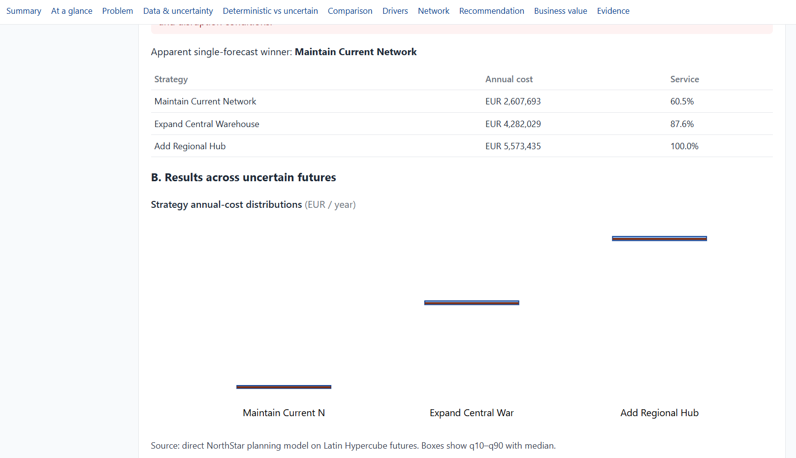

Describe uncertainty
Document central assumptions, plausible ranges, units and synthetic evidence sources.
A generic uncertainty-aware decision workflow applied to a fictional logistics planning problem.
NorthStar must decide whether to maintain its current distribution network, expand the central warehouse or add a regional hub.
The difficulty is that future demand, seasonal peaks, operating costs, supplier delays and warehouse downtime are uncertain. A single central forecast can make one option look attractive without showing how fragile that result may be.

Document central assumptions, plausible ranges, units and synthetic evidence sources.
Run each strategy across many reproducible futures and preserve the execution evidence.
Show outcome ranges, downside exposure, important drivers, vulnerable components and ranking stability.
The demonstrator shows how uncertainty analysis can reveal risks hidden by a single forecast, identify the assumptions worth investigating, distinguish structural network importance from direct business consequence, and preserve a traceable record of the decision process.
Read more about the architecture, uncertainty workflow and human-centred decision logic.